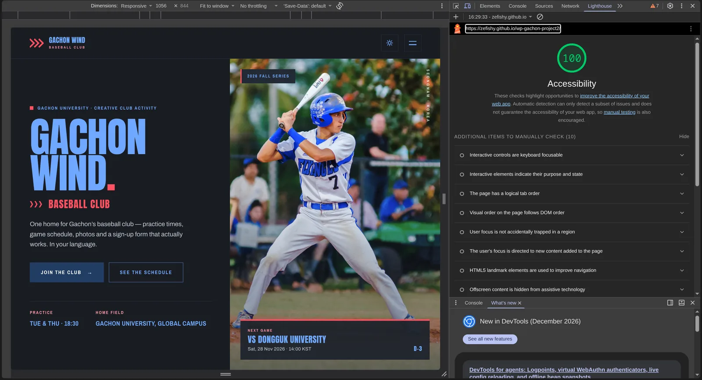
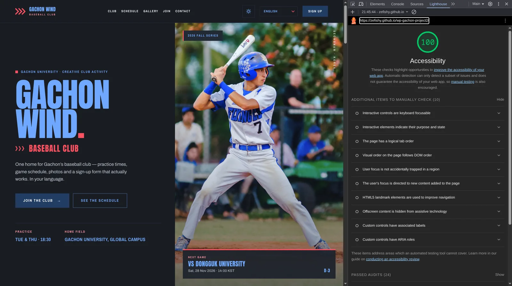

Week 9_1 — Accessibility Audit
I ran Lighthouse (Accessibility only) on our team project, the GACHON WIND baseball club homepage. It scored 100 on the first run, so there were no failing audits to fix. I fixed the one flag the report did raise and ran it again.
The homework
Due Thursday before class · post to Discord.
Accessibility slides — Summary & Homework
- Run Lighthouse on your personal or team project site (Accessibility audit only).
- Screenshot the initial Accessibility score (make sure the scores are 100).
- Fix at least 3 failing audits from the report.
- Re-run Lighthouse and screenshot the improved score.
- Post both screenshots and the list of 3 fixes to the weekly task page.
Before
Audited page: zefishy.github.io/wp-gachon-project2 (source on GitHub). Chrome DevTools, Lighthouse tab, Accessibility only, Mobile.


Every scored audit passed on the first run: colour contrast, image
alt text, form labels, button and link names, heading
order, the lang attribute and the main landmark. The
page already had a skip link
(<a class="skip-link" href="#main">), which the
slides ask for.
What I changed
Because nothing failed, I couldn’t fix 3 failing audits. The report did flag one item that doesn’t count toward the score, “Elements with visible text labels do not have matching accessible names” (WCAG 2.5.3, label in name), on the “Next game” card in the hero.
-
The card is a link whose visible text starts with “Next
game”, but its
aria-labelreplaced that text for screen readers. Someone using voice control who says “click Next game” might not hit it. -
I removed the
aria-labeland moved the extra hint into a visually hidden span inside the link, so the accessible name now starts with the visible words. -
The page is in five languages, so I renamed the dictionary key
from
hero.nextAriatohero.nextHintinjs/i18n.jsfor all of them.
<!-- before -->
<a class="hero-next" href="#schedule" data-hero-next
data-i18n-attr="aria-label:hero.nextAria">
<span class="hero-next-label">Next game</span>
...
</a>
<!-- after -->
<a class="hero-next" href="#schedule" data-hero-next>
<span class="hero-next-label">Next game</span>
...
<span class="sr-only" data-i18n="hero.nextHint">— jump to the schedule</span>
</a>
Commit 0e891c4 in wp-gachon-project2. My before capture
shows only the score and the manual checks, so the flag itself is
documented here by the code change.
After


The score stayed at 100 and the label-in-name flag is gone. The 10 “additional items to manually check” are still listed, because Lighthouse can’t test them automatically.